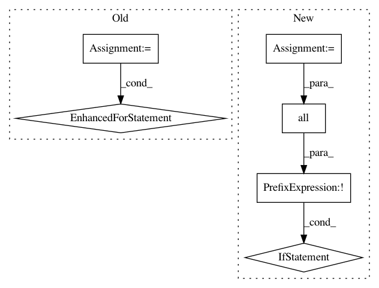

544875dd8a7fea49a86e5623d37274159b4ba7b5,skopt/optimizer/base.py,,base_minimize,#,20
Before Change
raise ValueError(
"`y0` elements should be scalars")
for i, (x, y) in enumerate(zip(x0, y0)):
// on the last iteration fit a model so we can start predicting
// unless there are random points to be evaluated next
fit_model = i == len(x0) - 1 and n_random_starts == 0
optimizer.tell(x, y, fit=fit_model)
if callbacks:
result = create_result(optimizer.Xi, optimizer.yi,
optimizer.space, optimizer.rng,
specs, optimizer.models)
for c in callbacks:
c(result)
// Bayesian optimization loop
for n in range(n_calls - n_init_func_calls):
// fit model after last random iteration
fit_model = n >= n_random_starts - 1
next_x = optimizer.ask()
After Change
// User suggested points at which to evaluate the objective first
if x0 and y0 is None:
y0 = list(map(func, x0))
if not all(map(np.isscalar, y0)):
raise ValueError(
"`y0` elements should be scalars")
optimizer.tell(x0, y0)
if callbacks:
result = create_result(optimizer.Xi, optimizer.yi,
In pattern: SUPERPATTERN
Frequency: 3
Non-data size: 6
Instances
Project Name: scikit-optimize/scikit-optimize
Commit Name: 544875dd8a7fea49a86e5623d37274159b4ba7b5
Time: 2017-01-10
Author: betatim@gmail.com
File Name: skopt/optimizer/base.py
Class Name:
Method Name: base_minimize
Project Name: GPflow/GPflow
Commit Name: 0d97bc0bb3db40017f1278d6c1f292ea0f789ab0
Time: 2020-03-27
Author: art.art.v@gmail.com
File Name: gpflow/optimizers/mcmc.py
Class Name: SamplingHelper
Method Name: __init__
Project Name: jonathf/chaospy
Commit Name: f47485cc4a21fb18564ede7ab0cc9001dbd0f1d9
Time: 2020-06-10
Author: jonathf@gmail.com
File Name: chaospy/descriptives/sensitivity/total.py
Class Name:
Method Name: Sens_t